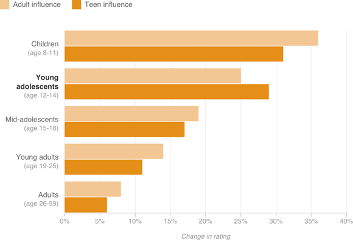

Young Teens Swayed More By Their Peers
People were asked to rate the riskiness of everyday situations and then were shown how other people rated the same situation. Then participants were asked to rate the situation again. Adult advice was almost always considered more persuasive — except by young teenagers.
